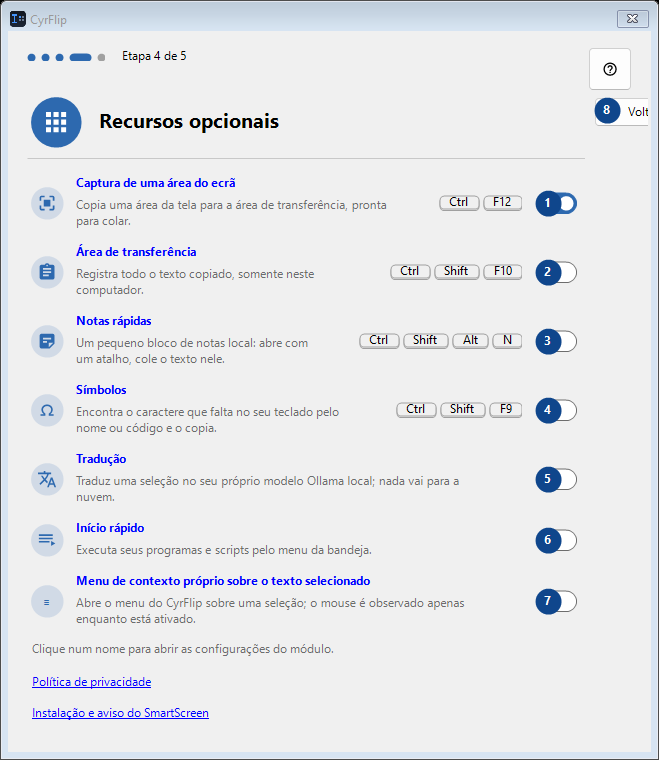
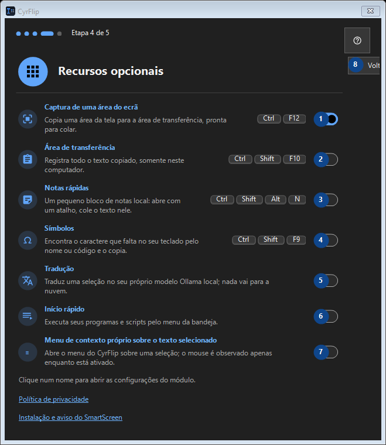

Recursos opcionais
Para que serve
Leia as explicações numeradas, escolha os valores necessários e continue com o comando da janela.


Ordem de utilização
Leia as explicações numeradas, escolha os valores necessários e continue com o comando da janela.
Elementos
1. Captura de uma área do ecrã
Ativado
Os seus atalhos2. Área de transferência
Desativado
Os seus atalhos3. Notas rápidas
Desativado
Os seus atalhos4. Símbolos
Desativado
Os seus atalhos5. Tradução
Desativado
Os seus atalhos6. Início rápido
Desativado
Os seus atalhos7. Menu de contexto próprio sobre o texto selecionado
Desativado
Os seus atalhos8. Voltar
Use este comando para a ação indicada. Leia qualquer confirmação antes de aceitar.
Os seus atalhos9. Avançar
Use este comando para a ação indicada. Leia qualquer confirmação antes de aceitar.
Os seus atalhos10. Pular
Use este comando para a ação indicada. Leia qualquer confirmação antes de aceitar.
Os seus atalhos